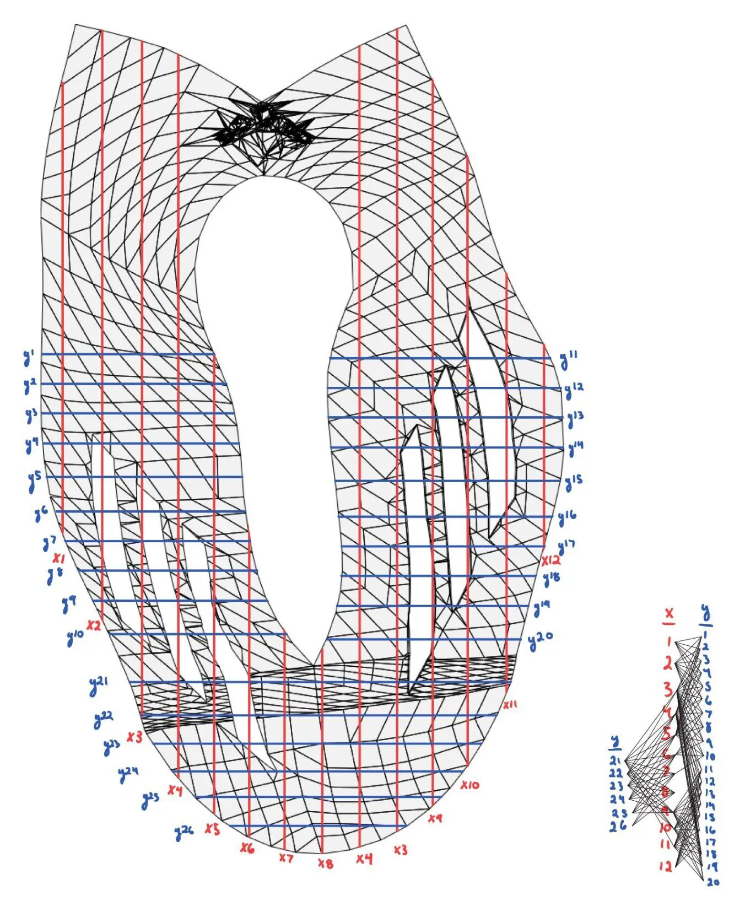
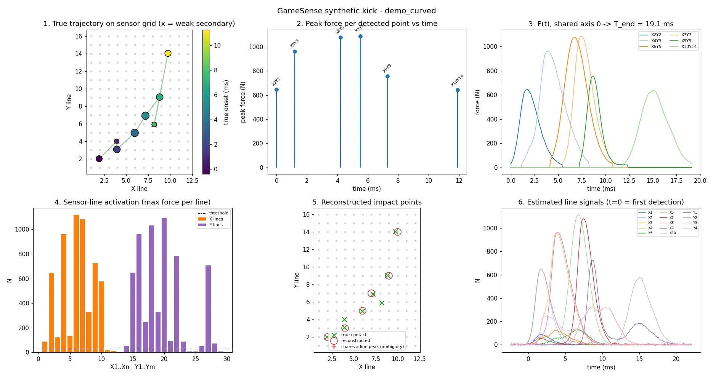
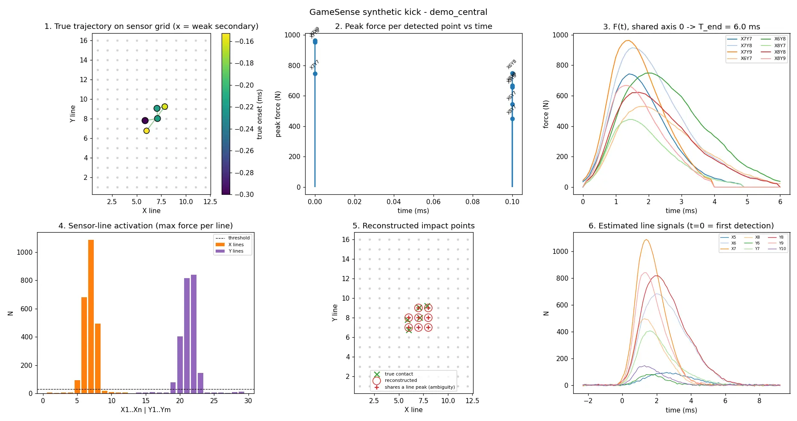
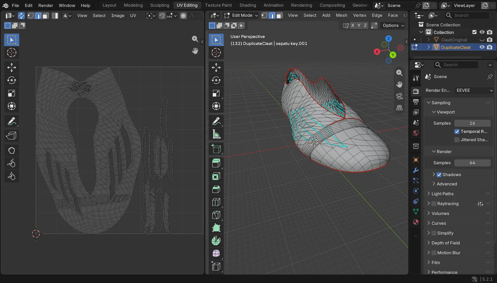

All projectsSheet 07 · Sensing & software · 2026
GameSense: a cleat that measures the kick
A sensor grid mapped onto a soccer cleat records where and how hard the ball was struck. An app scores the kick out of 100 against simulated “perfect” strikes and suggests how to improve. Built at VTHacks 14.
VTHacks 14 · September 2026
Best Hack to Promote Diversity, Equity & Inclusion
718 participants from 221 schools.
AwardFig. 07.1 — Interactive · force footprints on the cleat
Watch a simulated kick travel across the sensor grid
Each footprint spreads across the cleat with the force at one sensor intersection, relative to that sensor’s own peak. A kick lasts 6–19 ms; playback stretches it to three seconds. Pick where the ball is struck, scrub the timeline, drag to rotate, and hover a sensor to read its force.
Sensor grid · 12 × 16 lines
Detected points

My part
Physics first: a nonlinear map from cleat to grid
I built the physics-based simulation, the 3D model and the nonlinear transformation behind the analysis. We unwrapped an open-source cleat mesh into a flat UV space and laid the sensor grid over it. Working in a square grid simplifies the signal drastically, and the nonlinear mapping still places each impact back on the real cleat geometry. It also lets sensor placement be optimized for battery life.
A Python script generated realistic simulated kicks with tunable contact force, curve and noise. These were the “professional” references a user’s kick is scored against.


What went wrong, and the fixes
Hardware rarely goes as planned
- The “piezoelectric” sensors were thin-film force-sensitive resistors, which meant a full circuit redesignRewired
- The ESP32 had no Bluetooth, so data went over Wi-Fi as UDP packetsPivoted
- The board had no headers, so we soldered them ourselvesBuilt
- Blender meshing stalled, so animations became mathematically driven HTMLPivoted

See the project
- Devpost submissionVTHacks 14
- Video walkthroughYouTube